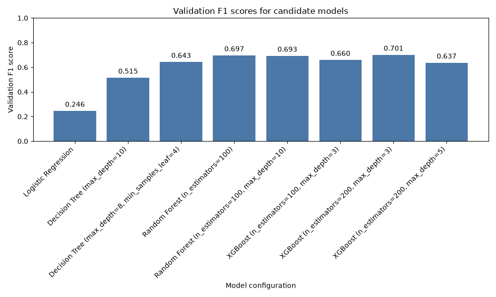

Validation F1 Scores for Candidate Models

Higher F1 indicates better validation performance. The XGBoost model with 200 estimators, depth 3, and learning‑rate 0.1 achieved the highest score (0.701).